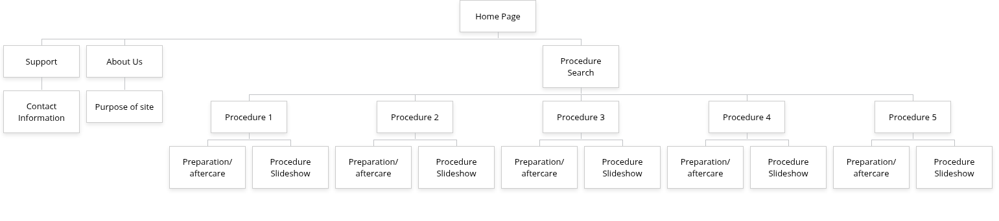

Requirements and Design Document
Procedure Insights
Jack Henley
4/5/2026
Project Name: Procedure Insights
Project Overview:
This site will be designed for patients preparing to receive various radiology treatments. It is intended to be useful both for patients seeking information at home, or for patients who are already in the hospital. The site will display a variety of procedures, and there will be a page for each procedure. Each page will contain an interactive slideshow of illustrations that patients can click through to see a step by step representation of what the procedure will entail. Each page will also contain detailed instructions on how to prepare in the days leading up to the procedure, as well as best practices for recovery in the days following the procedure.
Client Information
My client is Travis Henley, and he works for ARA Health. This project will not be tied to ARA Health in any way, and will be an independent source for information about procedures.
Site Map:

Page Design
Home
This page will be the landing page for users when they visit the site. This page allows them to choose which sub-page they would like to navigate to, and also provides them with a brief description of the purpose of the website, which will be a paragraph element. Users will be able to navigate to the ‘About Us’ and ‘Support’ pages via a navigation bar in the footer of the page. They will be able to navigate to the ‘Procedure Search’ page by clicking a button displayed in the center of the page.
Support
This page will allow users to get in contact if they have any extra questions. There will be a field that will allow the user to submit a question, which will then send an email to my client. This will be achieved through an API such as but not limited to Formspree
About Us
This page will give a more detailed overview of the website, as well as provide information about my client and his work.
Procedure Search
This page will provide users with a searchbar that will allow them to view the page corresponding to their procedure. It will feature a list view when searching which will allow the user to see all procedures with similar names. I will create this searchbar myself using Javascript.
Procedure X
Each procedure page will be structurally identical. They will feature an interactive slideshow, containing illustrations which will allow the user to view the procedure step by step. They will also feature two distinct paragraphs containing information about preparatory care, as well as recovery-related care. They will also have a link to the ‘Support’ page, which they can navigate to if they have further questions related to the procedure.
Dynamic Functionalities
The main functionalities that the site will contain are as follows:
- Form which automatically emails contents when submitted (Page: Support | Implementation: external API)(example)
- Search bar that allows users to navigate to relevant/related pages (Page: Procedure Serach | Implementation: Javascript)
- Interactive slideshow (Page: Procedure X | Implementation: Javascript)